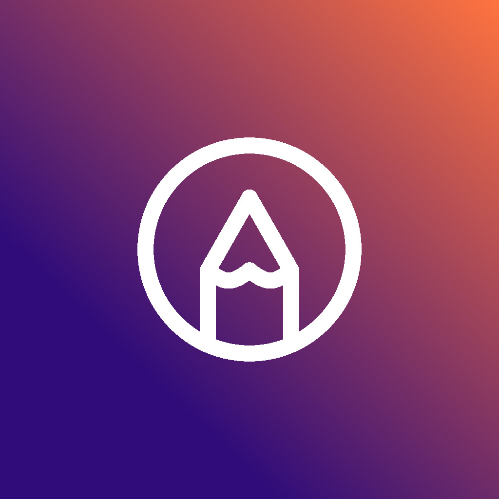
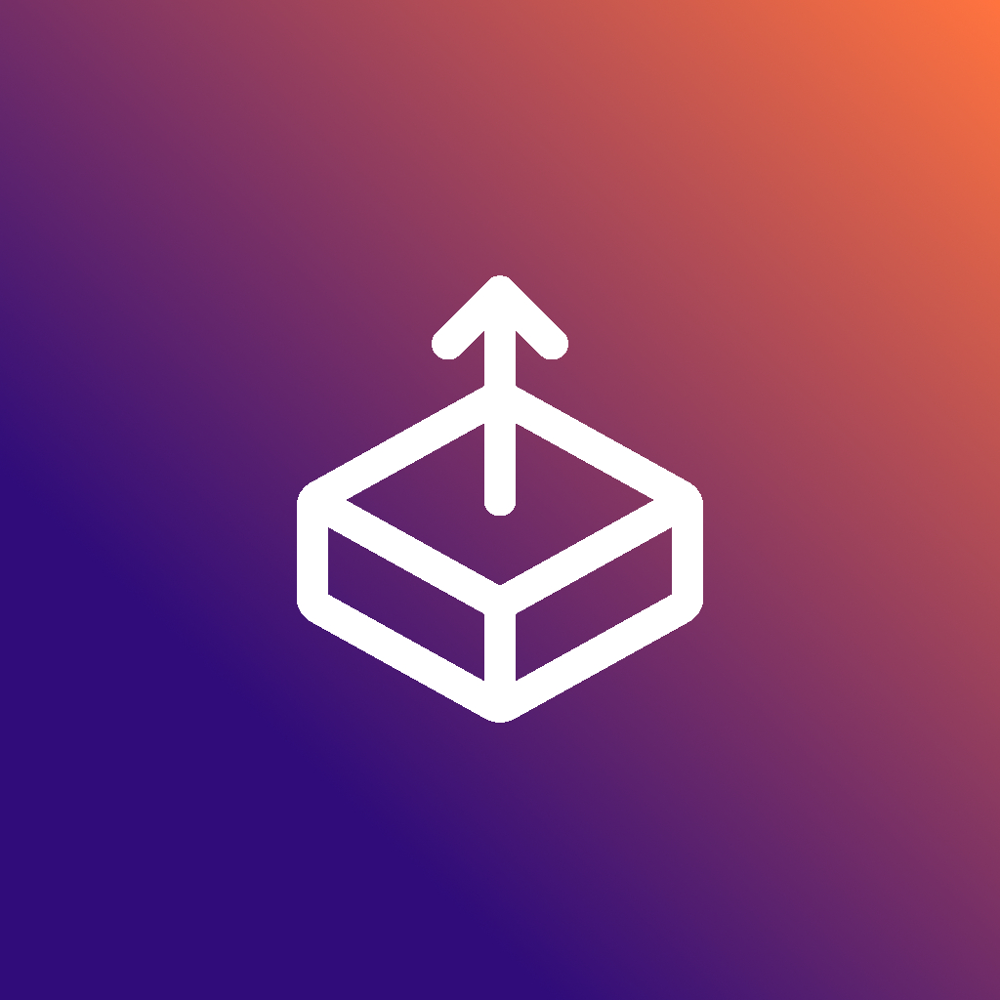
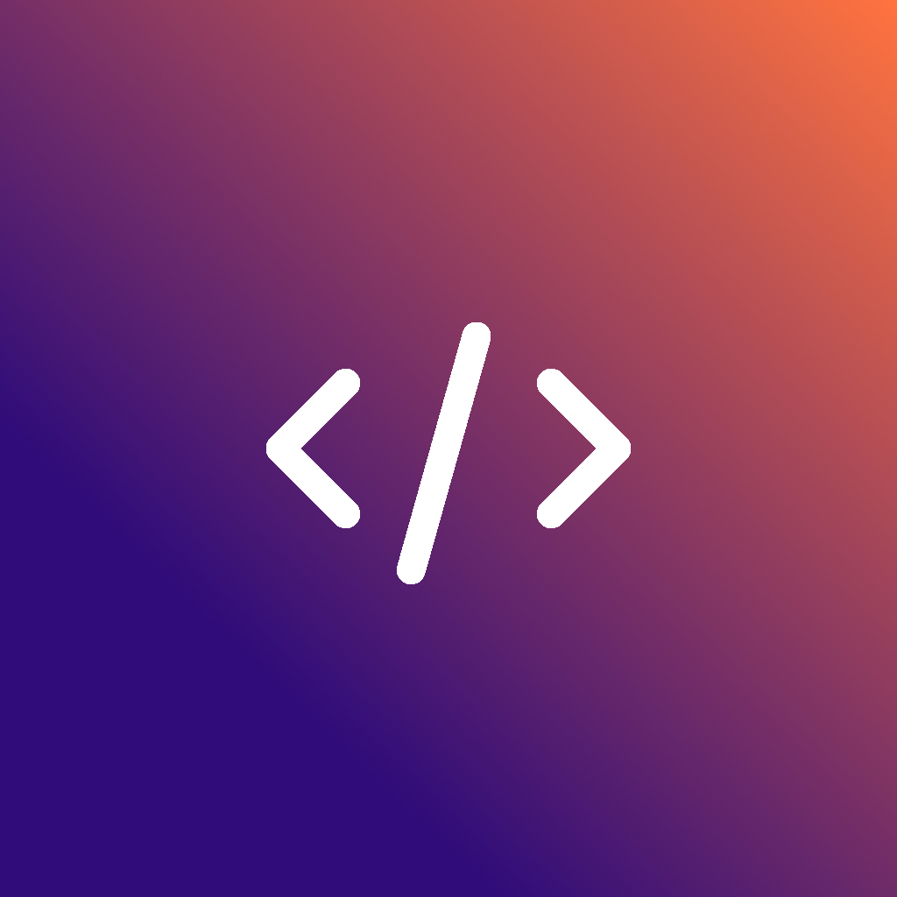

Markdown Support
Blog posts are written in Markdown, a simple and nearly-universal format. This means you can bring over your posts from other platforms, and easily export to another if you want to.
It supports Markdown, and is really fast.
This section shows the 4 most recent blog posts. Check them out for tips on how to get started!
Here are some of the features of this template
Blog posts are written in Markdown, a simple and nearly-universal format. This means you can bring over your posts from other platforms, and easily export to another if you want to.

You can easily theme the entire website by changing just a few colors in the _themes.scss file.

Components are built to be reused, and you can build new pages and layouts without much CSS knowledge. You can see all components in Histoire by running "npm run story:dev"
Images are automatically optimized and lazy loaded, to ensure the website loads as fast as possible regardless of connection speed.
This template was built with dark mode in mind. It can swap between themes automatically (based on system settings) or manually. Both themes can be tweaked in the _themes.scss file.

All code is open source, which means you can copy and modify it to your heart's content. All I ask is that you make your code open too so that knowledge can be passed on.